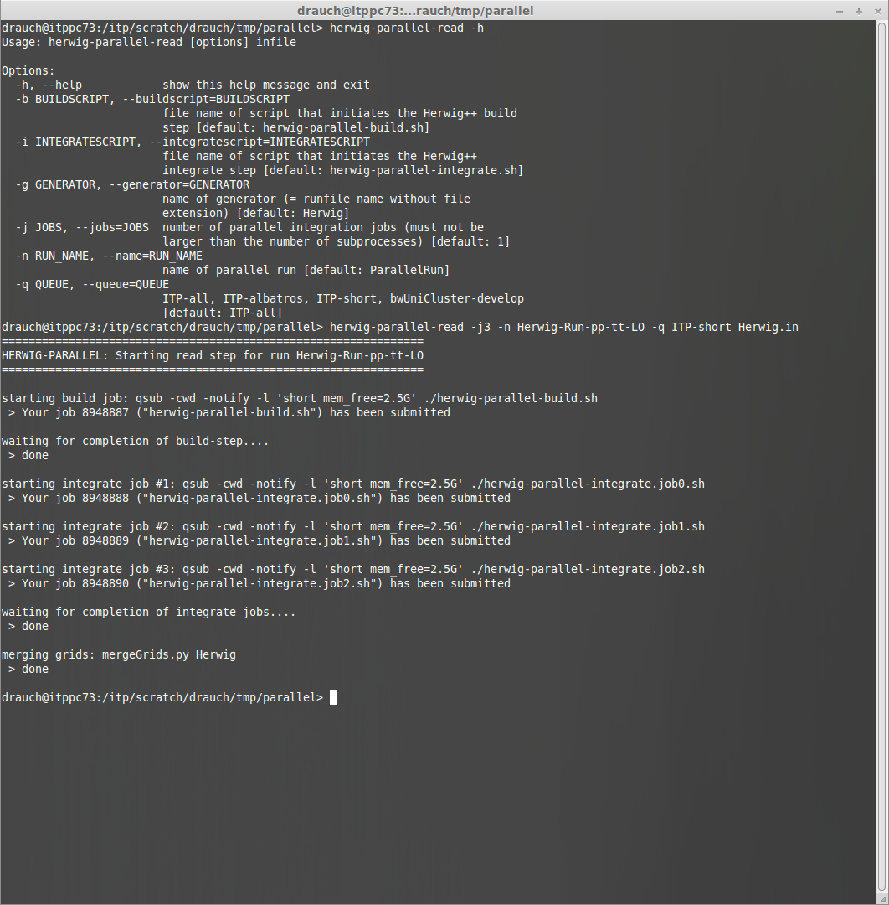
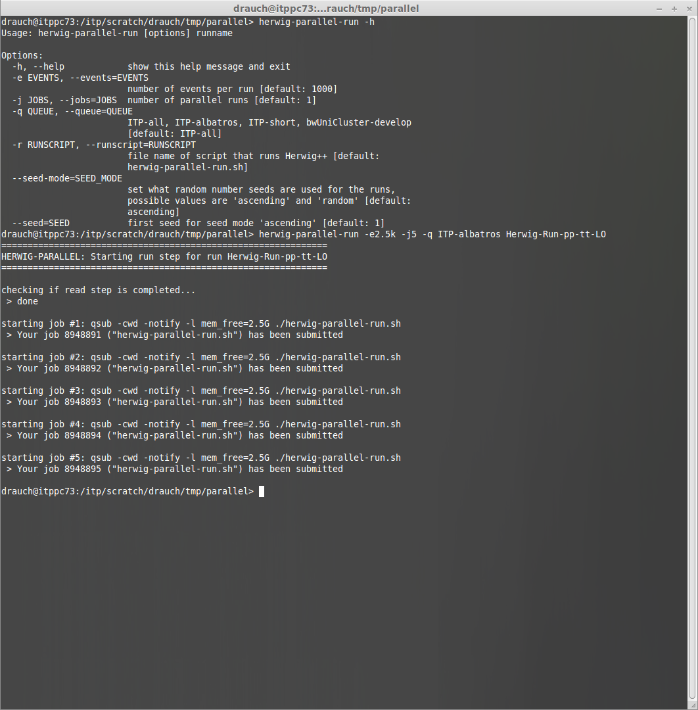
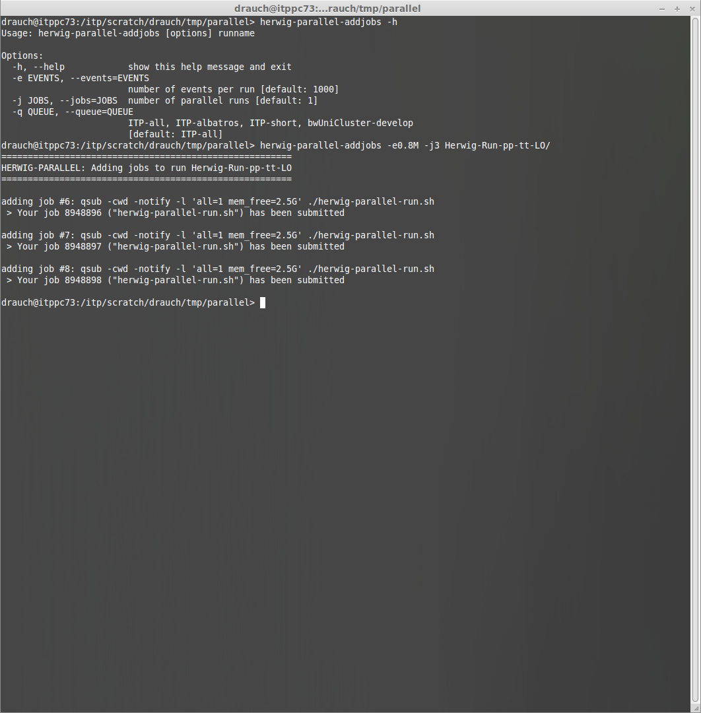
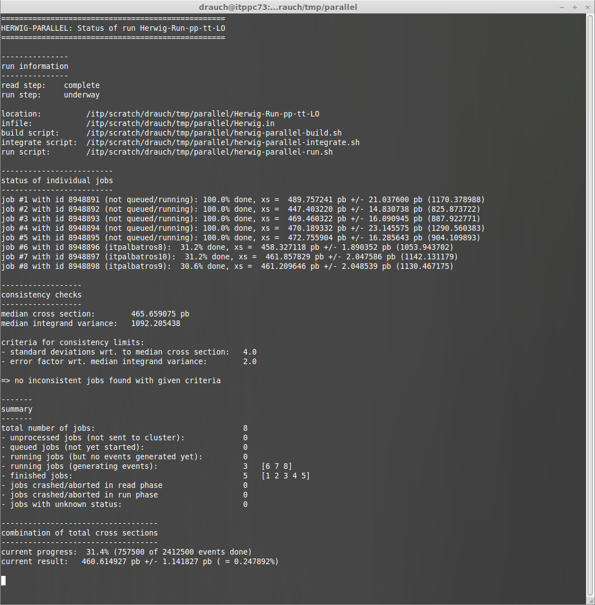
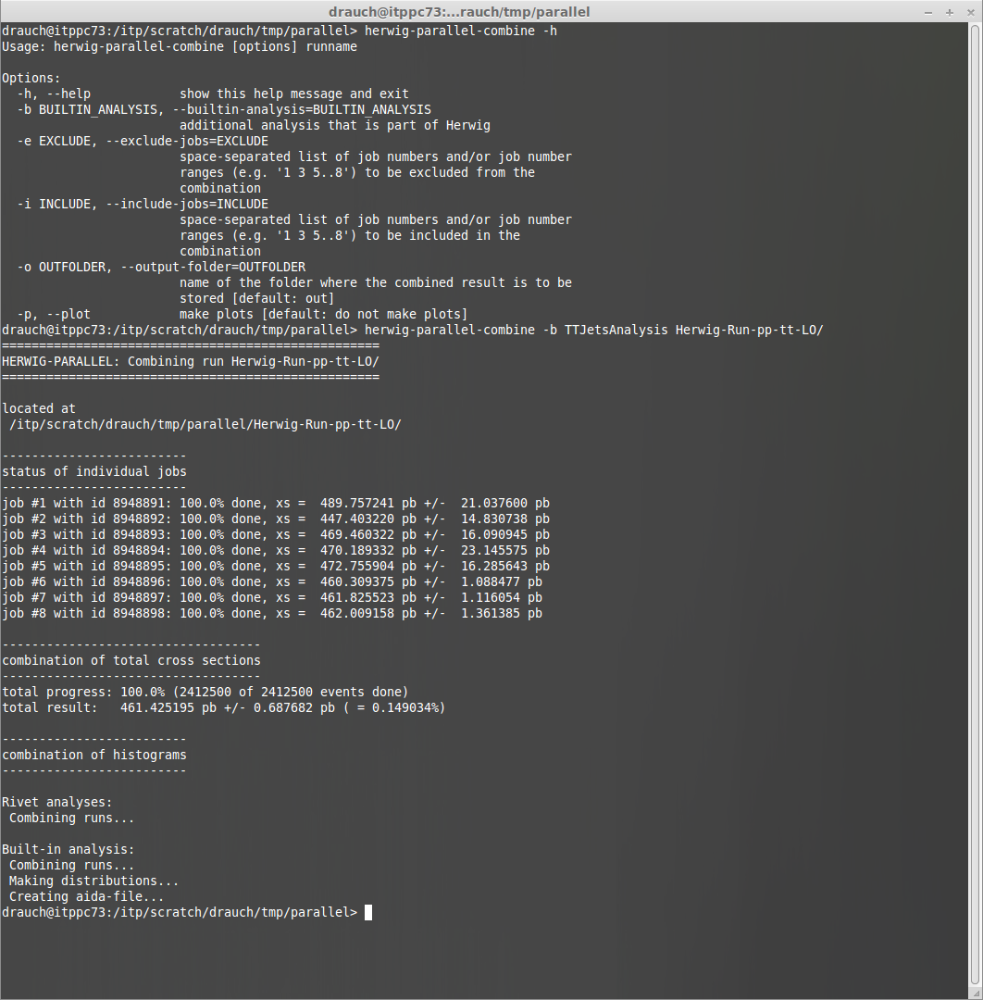

Herwig-Parallel is a collection of python scripts to start, monitor, control and combine parallel runs of the Monte Carlo event generator Herwig++ on computer clusters.
They allow the user to create parallel runs consisting of an arbitrary number of jobs. More jobs can be added to an existing run thus making it easy to increase the statistics. The whole run or individual jobs can be aborted and restarted. It is possible to monitor the progress of the run, the status of individual jobs as well as the current combined estimation for the total cross section and its error. Once all jobs of a run are finished they can be combined in order to obtain the final combined results for the total cross section and histograms. Currently, the use and combination of built-in analyses, Rivet analyses and HepMC files is supported. Furthermore, it is possible to compress a finished parallel run such as to minimize the required disk space while preserving access to the combined results and to uncompress it again when access to all of the data should become necessary again.
Herwig-Parallel is built to be rapidly configurable to different high performance computing clusters by means of configuration files. For each HPC cluster multiple queues can be configured thus allowing for the submission of jobs with tailor-made resource demands.
    Note
At the moment unfortunately only version 1.9.0 of Rivet is supported. This is due to the fact that currently the development and use of patches for specific Rivet versions is necessary in order to have the required functionality. Hopefully, this procedure will become obsolete with future releases of Rivet.
{kind=link}
{kind=link}
{kind=link}
{kind=link}
{kind=link}